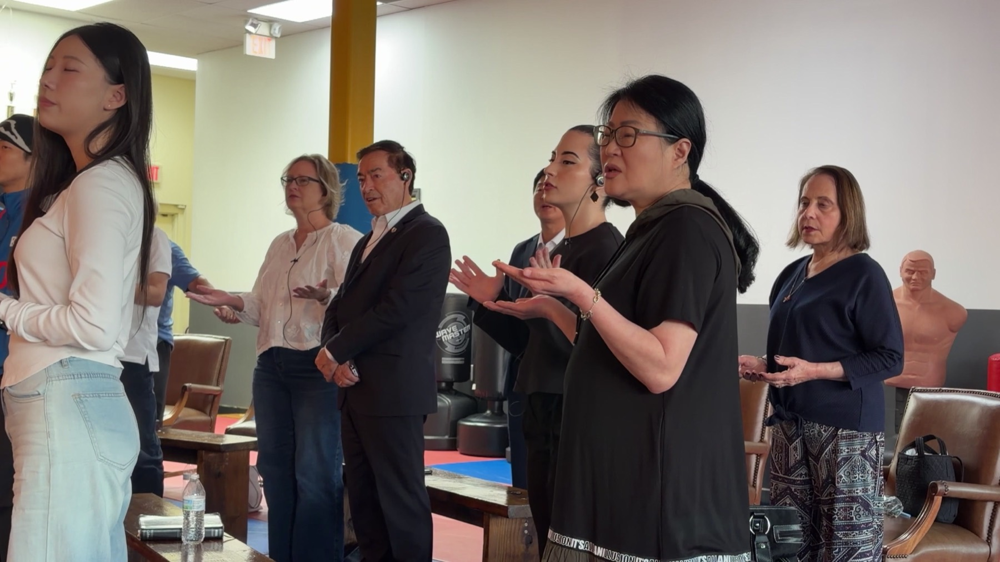
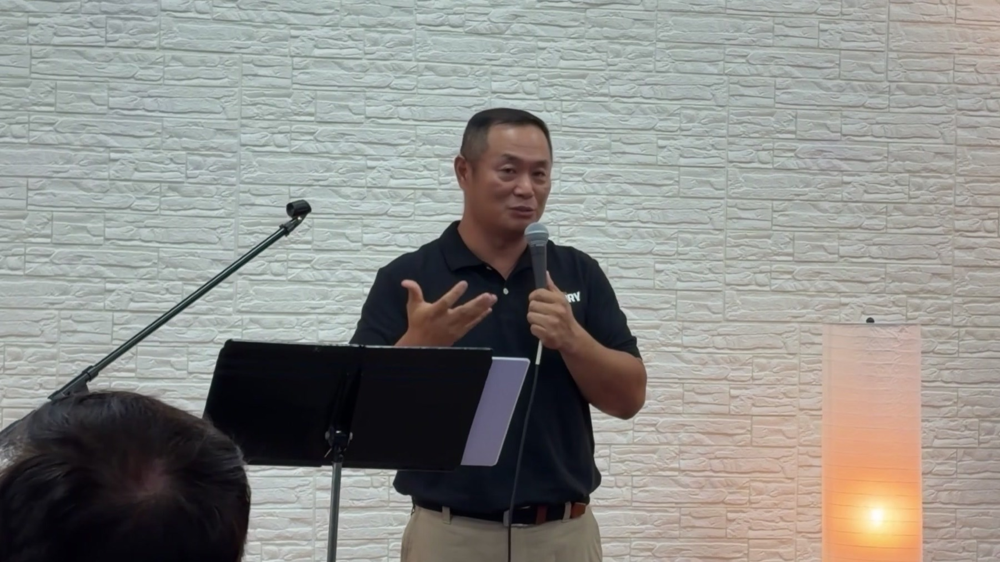
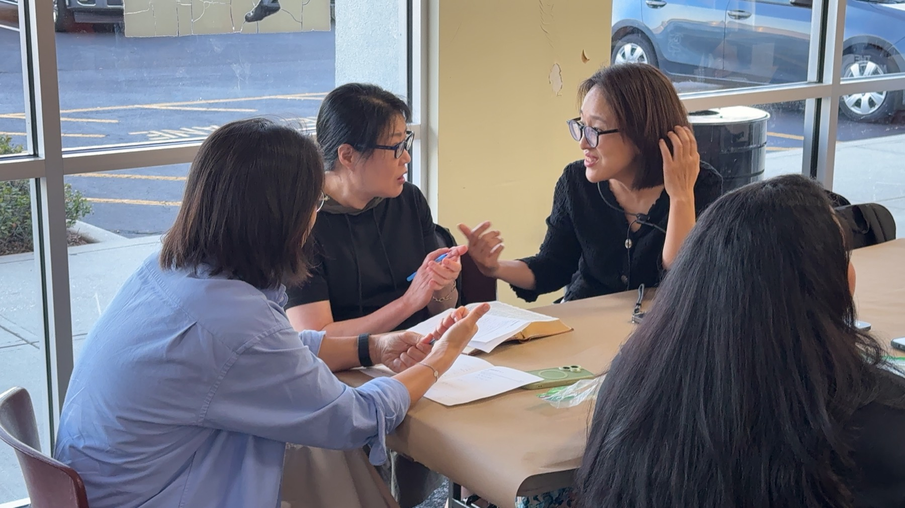
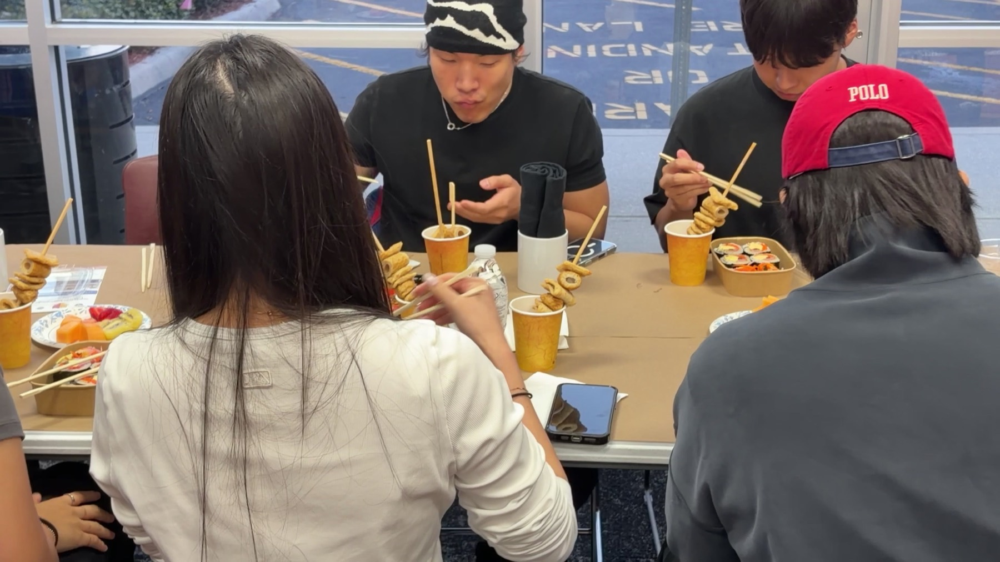

하나님의 이야기가
당신의 삶에서 시작됩니다.
2026년 9월 27일, 스토리교회의 첫 예배입니다.




미리 들어보고 같이 찬양하면 좋겠습니다. 찬양 인도 허강현 전도사
"하나님의 이야기가
당신의 삶에서 다시 시작됩니다."
"너희는 우리로 말미암아 나타난 그리스도의 편지니 이는 먹으로 쓴 것이 아니요 오직 살아 계신 하나님의 영으로 쓴 것이며 또 돌판에 쓴 것이 아니요 오직 육의 마음판에 쓴 것이라." — 고린도후서 3:3
복음은 나를 향한
하나님의 가장 아름다운 이야기입니다.
우리는 옛 이야기를 끝내고,
그리스도 안에서 완전히 새로워진
'하나님의 살아있는 편지'로
다시 태어났습니다.
예수 그리스도를 중심에 두고,
은혜로 빚어지며,
샌포드에서 하나님의 이야기의
일부가 되어가는
신실한 공동체.
나를 구원하신 주님의 위대한 이야기. 모든 사역과 예배의 중심에 오직 예수 그리스도의 복음을 둡니다.
세상 속에서 내가 직접 살아내는 이야기. 우리는 관람객이 아니라, 주님의 이야기를 삶으로 증거하는 살아있는 증인입니다.
말씀과 기도로 내면이 깊어지는 이야기. 성도 한 사람 한 사람을 주님의 충성스러운 제자로 세웁니다.
우리가 함께 모여 완성해 가는 이야기. 삶의 현장에서 그리스도의 성품과 복음을 선명하게 드러내는 신실한 공동체를 이룹니다.
스토리교회는 북미주 개혁교회(CRCNA)에 속한 교회입니다. 1857년 네덜란드 이민자들이 세운 신앙 유산에서 시작되어, 종교개혁의 정통성과 깊이 있는 신학을 굳건히 지켜온 교단입니다. 역사적 뿌리는 네덜란드에 있지만, 현재는 다양한 인종과 문화가 어우러진 북미의 대표적인 교단으로 성장했습니다. 말씀의 절대 권위를 믿으며, 교회뿐만 아니라 삶의 모든 영역에서 하나님의 주권을 인정하는 건강한 신앙을 추구합니다.
crcna.org →